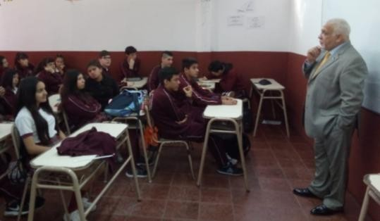

LOS SOÑADORES
Pequeña historia del Colegio Naciones Unidas del Mundo.
|Por Virginia Pereyra y sus alumnos y alumnas de 3° Secundaria.
Ubicado en la Avenida Remigio López (ex Sarmiento) 2257, entre las calles Irigoin y Tupac Amaru de la localidad de San Miguel.
En el año 1991, los señores Elvio Norberto Sosa y Juan Carlos Udovin, conformaron una sociedad, en la que ambos pactaban la apertura de un colegio en la zona de San Miguel Oeste, hoy llamada, “Ciudad Santa María”.
Ambos soñaban con llevar “Educación” a lugares que se consideraban alejados o marginales, puesto que, en su ideal estaba inscripto el profundo sentimiento de que la vida de las personas puede cambiar si adquieren conocimientos y una buena educación. “Una vida puede cambiar radicalmente, si recibe herramientas que lo ayuden a subir de nivel en la sociedad y así evitar la mirada indiferente de los grupos sociales en los que se encuentra inserto” . Por estas cuestiones se decidió la apertura de la Institución en ese sector de la localidad.
Juan Carlos Udovin, es hijo de trabajadores. Tiene una trayectoria de treinta y ocho años en la docencia. Logró varios títulos académicos en el área docente y además se recibió de psicólogo. Lleva adelante la conducción de una de las Instituciones más importantes de San Miguel, el Instituto Superior Cultural Británico. Elvio Sosa, por su parte, también es hijo de trabajadores. Su madre era docente y su padre militar; siguió los pasos de su progenitor y realizó su carrera militar en el Arma de Caballería, donde luego, por cuestiones personales, tuvo que renunciar. Fundar el Colegio Naciones Unidas del Mundo estaba dentro de sus proyectos personales. La relación afectiva y personal entre Juan Carlos y Elvio los llevó a conformar esta sociedad familiar y así probaron llevar a cabo este gran proyecto.
En los inicios, el colegio se edificó sobre un terreno adquirido hacia fines del año 1991, cuya compra la realizaron a dos hermanos de apellido Rojo, quien había anunciado la venta en la inmobiliaria Torres, ubicada en las inmediaciones del colegio. Dando inicio en 1992, con dos aulas del Jardín de Infantes, una oficina y los baños en la parte frontal del terreno, hacia el fondo se llegaba por un caminito de piedritas rojas que llevaban a las aulas de primero y segundo grado y el patio donde se realizaba educación física, bajo un techo de chapas. La inauguración y el desarrollo arquitectónico del edificio se hizo a “todo pulmón” ; durante las vacaciones de verano, todos los sábados, después de almorzar, Elvio y Juan Carlos concurrían al CNUM para pintar y arreglar sus instalaciones para que al inicio del siguiente ciclo lectivo, los estudiantes se sintieran cómodos y a gusto en “su Colegio” . El terreno lindero al colegio, lo que hoy conocemos como el tinglado y patio, era un campo, donde pastaban un caballo y un cerdo y en los límites del colegio había una hilera de pinos, que se plantaron como parte de un proyecto abierto a la comunidad, en la que Udovin, Director del colegio, convocó a un grupo de padres a participar, en una ceremonia emotiva. Por otra parte, detrás de este proyecto había una intencionalidad, la de mantener la privacidad de los estudiantes mientras realizaban actividad física, ya que quedaban muy expuestos.
Con el tiempo la matricula de estudiantes se incrementó, dando lugar al crecimiento edilicio del colegio. Dos años más tarde, se procedió a la compra del terreno contiguo y construyeron el tinglado donde hoy, los estudiantes realizan actividad física y lo utilizan como zona de esparcimiento en los recreos.
Uno de los detalles característicos de su fachada, es que las puertas y ventanas tienen vidrio partido, la intencionalidad de los mismos radicaba en que se pretendía ofrecer comodidad y confort a los chicos, que superen las expectativas de su propio entorno y que tomen el “calor de hogar” dentro del mismo.
El mantenimiento del colegio estaba a cargo del “tío Augusto”, gran persona, que dedicaba incansablemente su esfuerzo para cumplir con sus labores, querido por todos en la comunidad educativa, dejó una huella imborrable en su paso por CNUM, siempre atento a sus responsabilidades y muy servicial .
Por otra parte, no podemos dejar de mencionar que como HITO FUNDACIONAL, los “Soñadores” (Elvio y Juan Carlos), enterraron en el patio una caja de vinos finos, que sería levantada para celebrar el 25 aniversario del colegio, pero, por cuestiones de índole personales para ambos, esto no se realizar, por lo que quedara allí hasta que los dos decidan el momento apropiado.
Sin embargo, hay una pregunta que nos hacemos todos ¿Cómo idearon el nombre del colegio? Y a esto debemos decir que la elección del mismo, no fue tarea fácil, había varios nombres en juego. En un principio, el nombre era Instituto Naciones Unidas, pero dado que en el mismo distrito había otro centro educativo con el mismo nombre, decidieron cambiarlo por “Colegio Naciones Unidas del Mundo”. Para celebrar esta nueva identidad, un compañero de armas de Elvio, que había regresado de una Misión de Paz, les obsequió una bandera con el escudo de las Naciones Unidas y allí quedó la misma como emblema de nuestra querida Escuela. Ambos pensaron en los valores de las Naciones Unidas, como paz, colaboración, integralidad, cooperación y evitar conflictos, dándose cuenta que todos estos, formaban parte del proyecto de Escuela que querían fundar. La misma debía ser un centro de calidad, considerando al estudiantado como seres integrales, y de esta manera crear lazos afectivos que generen identidad con la institución . Otra tarea difícil fue la definición del color del uniforme. Tanto Juan Carlos como Elvio querían un color que marque la diferencia, con colores atractivos y que sean distintos a los ya vistos en la zona, finalmente el bordó combinado con el blanco fueron los seleccionados, porque además ese color estaba en la bandera emblema que les habían obsequiado.
El perfil de docente que buscaban, debía reunir varias condiciones, pero la más importante era que éste se sienta identificado con los valores del proyecto fundacional del colegio, además de estar altamente capacitado, que trabaje con esfuerzo y que sea empático con las familias de los chicos que concurrían .
La apertura del nivel secundario, estuvo dado por el crecimiento de la población estudiantil, y aunque pasaron los años, varios gobiernos y varias crisis económicas, el colegio continúa creciendo y renovándose, brindando comodidad a sus queridos estudiantes, factores que hacen sentir un gran orgullo a sus fundadores.
En la memoria de grandes personas que comenzaron su vida laboral allí, está el recuerdo del árbol grande que estaba en el patio y que bajo su sombra pasaron varias generaciones de
estudiantes que jugaban o simplemente posaban para la foto estudiantil y que además las mismas seños utilizaban para reunirse en los recreos a cuidar a los chicos o a tomar unos ricos mates en sus momentos libres.
O como relata Juan Carlos en la entrevista, “un sábado fuimos al colegio a rociar herbicida entre las piedritas rojas, para que no crezca la gramilla que lo afeaba y nos tomó por sorpresa una gran tormenta de fuertes lluvias y Elvio y yo nos turnábamos cubiertos de una manta para poder terminar el trabajo. Nos empapamos todos pero al fin logramos que quede todo el patio cubierto con el veneno.
Lo cierto es, que ésta, es solo una pequeña parte de la cantidad de relatos y de historias de personas que pasaron por el CNUM, dejando una huella o poniendo su granito de arena para que el sueño de dos grandes personas continúe en el tiempo y que solo la Historia se encargará de mantener vivas todas esas anécdotas que hicieron y hacen del CNUM un espacio maravilloso.
-------------------------------
En la imagen podemos observar a nuestro querido Elvio con los estudiantes...
